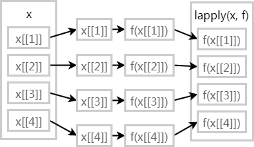
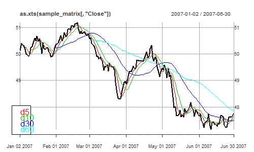
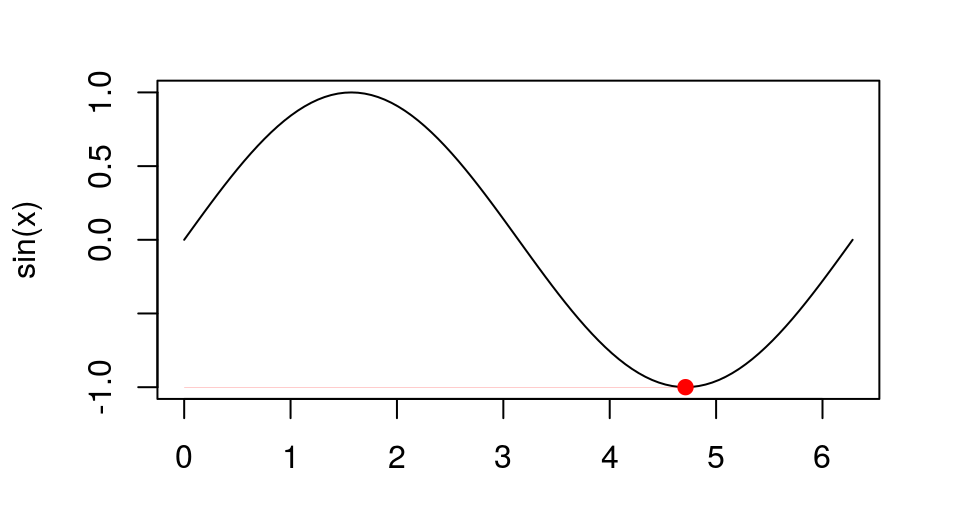
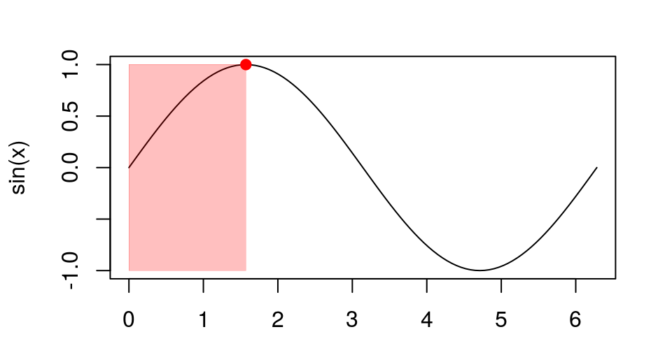

2017-08-02 20:41:47
目录
泛函 (Functionals)
什么是泛函
- 泛函: 输入参数为函数，输出结果为向量的一类函数
- 最典型的泛函就是
apply家族函数 - 上节讲到的高阶函数
Reduce、Filter等也都是泛函 - 泛函常用于迭代循环、数值计算

典型的泛函: lapply
把传统的循环结构
for (x in xs) fun(x)
转化为更紧凑的形式
lapply(xs, fun)
优点
- lapply用C语言编写，更高效
- 代码语义更贴近解题意图
- 将过程函数化，减少bug
自己写一个泛函
- 对向量x算一下n位移动平均/中位/…
- 对xts的模拟股价数据算日均线
moveN <- function(x, n, fun=mean, ...){
stopifnot(length(x)>n)
o <- sapply(n:(length(x)),
function(i) fun(x[(i-n+1):i]), ...)
c(rep(NA, n-1), o)
}
library(xts); data(sample_matrix)
mvAvg <- sapply(
c(5, 10, 30, 60), function(n)
moveN(sample_matrix[,4], n, mean))
dimnames(mvAvg) <- list(
dimnames(sample_matrix)[[1]],
c("d5", "d10", "d30", "d60"))plot(as.xts(sample_matrix[,'Close']))
for (i in 1:4) print(
lines(as.xts(mvAvg[,i]), col=i+1))
legend('bottomleft',
legend=colnames(mvAvg),
text.col=2:5)
并行
- 函数式编程的一个重大优势就是便于并行
- 可用parallel包提供的并行版
apply家族函数进行并行计算 - 并行计算并不总能提高效率，因为分配队列和多核调度本身也产生开销
扩充diamonds数据集，然后建模
library(ggplot2)
diamonds1 <- as.data.frame(do.call("rbind",
rep(list(diamonds), 100))) ## "349.8 Mb"
df.lst <- split(diamonds1, diamonds1$clarity)
models <- lapply(df.lst, function(df)
lm(price~carat, df))
(结果略。)
按"p"查看传统方法和并行方法的耗时对比
- (多CPU核计算机) 可用
lapply的并行版mclapply(Linux/OSX) 或parLapply(Windows) 优化
library(parallel)
cl <- makeCluster(detectCores()) # 创建集群
models <- parLapply(cl, df.lst, function(df)
lm(price~carat, df))
sapply(models, function(m) coef(m)[[2]])
I1 SI2 SI1 VS2
4209.793 7870.255 8090.348 8626.157
VS1 VVS2 VVS1 IF
9000.726 10077.188 10469.250 11625.441
stopCluster(cl) # 最后记得关闭集群
扩展: plyr包
- plyr包提供了一套apply家族的衍生函数，贯彻SAC(split-apply-combine)策略
- base包
| in\out | list | data frame | array |
|---|---|---|---|
| list | lapply) |
sapply() |
|
| data frame | by() |
||
| array | apply() |
- plyr包
| in\out | list | data frame | array |
|---|---|---|---|
| list | llply() |
ldply() |
laply() |
| data frame | dlply() |
ddply() |
daply() |
| array | alply() |
adply() |
aaply() |
数值计算
- 泛函常用于数值计算，如
integrate(): f()函数的曲线下面积uniroot(): f()何时取值为零optimise(): f()取最大/小值的位置
integrate(dnorm, -1.96, 1.96)
## 0.9500042 with absolute error < 1e-11
uniroot(function(x) cos(x) - x, lower = -pi,
upper = pi, tol = 1e-9)$root
## [1] 0.7390851
unlist(optimise(cos, c(0, 2 * pi)))
## minimum objective ## 3.141593 -1.000000
unlist(optimise(sin, c(0, 2 * pi),
maximum=TRUE))
## maximum objective ## 1.570794 1.000000
(按"p"看代码)


例子: 家族函数
Hadley Wickham的一个例子: 基于核心工作函数，通过泛函繁衍出整个家族
rm_na <- function(x, y, identity) {
if (is.na(x) && is.na(y)) {
identity
} else if (is.na(x)) {
y
} else {
x
}
}
add <- function(x, y, na.rm = FALSE) {
if (na.rm && (is.na(x) || is.na(y)))
rm_na(x, y, 0)
else x + y
}r_add <- function(xs, na.rm = TRUE) {
Reduce(function(x, y)
add(x, y, na.rm = na.rm), xs, init = 0)
} # r_add 等价于sum()
c_add <- function(xs, na.rm = FALSE) {
Reduce(function(x, y)
add(x, y, na.rm = na.rm), xs,
accumulate = TRUE)
} # c_add 等价于cumsum()
row_sum <- function(x, na.rm = FALSE) {
apply(x, 1, r_add, na.rm = na.rm)
} # row_sum等价于rowSums()
col_sum <- function(x, na.rm = FALSE) {
apply(x, 2, r_add, na.rm = na.rm)
} # col_sum等价于colSums()函数算子 (Function Operators)
什么叫函数算子 (FO)
- 函数算子: 输入参数为（一个或多个）函数，输出结果也为函数的一类函数
- 函数算子和泛函一样，可以锦上添花，但并不必需
- 让代码更易读、更表义
- 帮助代码写得更快
- 函数算子和泛函的差别
- 泛函: 提取循环结构的模式
- 函数算子: 提取匿名函数的模式
- 函数算子和工厂函数的差别
- 工厂函数: 低阶函数，接受向量，返回函数
- 函数算子: 高阶函数，接受函数，返回函数
函数算子的主要类型
- 行为函数算子 (Behavioral FO)
- 不改变输入和输出的函数，但会添加一些行为
- 捕获函数运行细节
- 延时和缓存
- 不改变输入和输出的函数，但会添加一些行为
- 输出函数算子 (Output FO)
- 修改输出函数
Negate(),failwith()capture_it(),time_it()
- 修改输出函数
- 输入函数算子 (Input FO)
- 修改输入函数
- 部分应用
partial
- 部分应用
- 修改输入函数
行为FO: 捕获细节
- 最常见的行为FO是在函数内部捕获运行细节
ignore <- function(...) NULL
# 构造行为FO tee
tee <- function(fun, on_input = ignore,
on_output = ignore) {
function(...) {
on_input(...)
output <- fun(...)
on_output(output)
output
}
}
# 求解函数g的单位根
g <- function(x) cos(x) - x
zero <- uniroot(g, c(-5, 5))
show_x <- function(x, ...)
cat(sprintf("%+.08f", x), "\n")
zero$root ## 0.739
# 函数求解的位置
zero <- uniroot(tee(
g, on_input = show_x), c(-5, 5))
## -5.00000000 +5.00000000 +0.28366219 ## +0.87520341 +0.72298040 +0.73863091 ## +0.73908529 +0.73902425 +0.73908529
# 函数的值
zero <- uniroot(tee(
g, on_output = show_x), c(-5, 5))
## +5.28366219 -4.71633781 +0.67637474 ## -0.23436269 +0.02685676 +0.00076012 ## -0.00000026 +0.00010189 -0.00000026
(按p看notes)
行为FO - 延时
delay_by <- function(sec.delay, f) {
function(...) {
Sys.sleep(sec.delay)
f(...)
}
}
delayed_sample <- delay_by(1, sample)
sapply(1:2, function(size) delayed_sample(1:10, size))
[[1]] [1] 5 [[2]] [1] 2 4
system.time(sapply(1:2, function(size) delayed_sample(1:10, size)))
user system elapsed 0.00 0.03 2.14
输出FO - 简单案例
Negate
lst <- list(a=1:2, b=list(c(3, 4)),
c=NULL，NULL)
- 无法用
lst[!is.null(lst)]清除NULL - 但可以用高阶函数
rmNulls <- function(x)
Filter(Negate(is.null), x)
rmNulls(lst)
$a [1] 1 2 $b $b[[1]] [1] 3 4
plyr::failwith
使用泛函时，一处出错，则整体退出
sapply(list(1, pi, 'a'), log)
Error in FUN(X[[i]], ...) : non-numeric argument to mathematical function
用failwith可以增加容错性
sapply(list(1, pi, 'a'), plyr::failwith(
NA, log))
Error in f(...) : non-numeric argument to mathematical function [1] 0.00000 1.14473 NA
输出FO - 复杂案例
capture_it
capture_it <- function(f) {
function(...)
capture.output(f(...))
}
str_it <- capture_it(str) str_it(Titanic)[3]
[1] " table [1:4, 1:2, 1:2, 1:2]
0 0 35 0 0 0 17 0 118 154 ..."
[2] " - attr(*, \"dimnames\")=List of 4"
[3] " ..$ Class :
chr [1:4] \"1st\" \"2nd\" \"3rd\" \"Crew\""
[4] " ..$ Sex :
chr [1:2] \"Male\" \"Female\""
[5] " ..$ Age :
chr [1:2] \"Child\" \"Adult\""
[6] " ..$ Survived:
chr [1:2] \"No\" \"Yes\""time_it
time_it <- function(f) {
function(...) system.time(f(...))
}
compute_mean <- list( base = function(x) mean(x), sum = function(x) sum(x) / length(x) ) x <- runif(1e6) call_fun <- function(f, ...) f(...) lapply(compute_mean, time_it(call_fun), x)
## $base ## user system elapsed ## 0.000 0.000 0.002 ## ## $sum ## user system elapsed ## 0.000 0.000 0.001
输入FO
- 部分应用:
pryr::partial
rmNulls <- partial(Filter, Negate(is.null)) mean2 <- partial(mean, na.rm=TRUE)
- 改变输入参数的类型
splat <- function(f) {
function(args) do.call(f, args)
}
x <- c(NA, runif(100), 1000) args <- list( list(x), list(x, na.rm = TRUE), list(x, na.rm = TRUE, trim = 0.1) ) sapply(args, splat(mean))
[1] NA 10.4307917 0.5433686
合并FO
pryr::compose或pryr::%.%
library(pryr) sapply(mtcars, compose(length, unique))
mpg cyl disp hp drat wt qsec vs am gear carb 25 3 27 22 22 29 30 2 2 3 6
square <- function(x) x^2 deviation <- function(x) x - mean(x) sd2 <- sqrt %.% mean %.% square %.% deviation sd2(1:10) # 同 1:10 %>% deviation %>% square %>% mean %>% sqrt
## [1] 2.872281
Thank you!